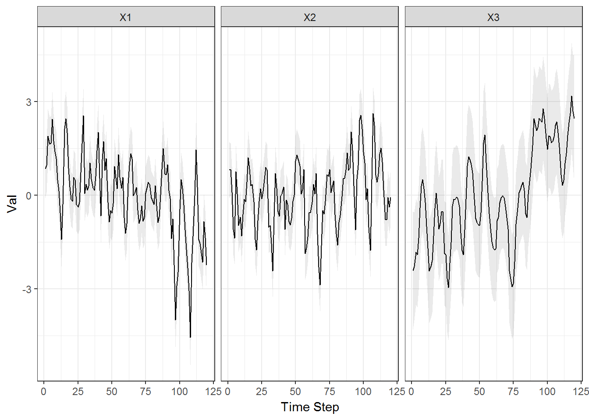

4 Plot states from a DFA using ggplot
date: March 15, 2018
Requires MARSS 3.10.5+
Required packages
library(MARSS)
library(broom)
library(ggplot2)
if(packageVersion("MARSS")<"3.10.4") stop("Need MARSS version 3.10.4 at least.")Load data and zscore
data(lakeWAplankton)
# we want lakeWAplanktonTrans, which has been log-transformed
# and the 0s replaced with NAs
plankdat = lakeWAplanktonTrans
years = plankdat[,"Year"]>=1980 & plankdat[,"Year"]<1990
phytos = c("Cryptomonas", "Diatoms", "Greens",
"Unicells", "Other.algae")
dat.spp.1980 = plankdat[years,phytos]
# transpose data so time goes across columns
dat.spp.1980 = t(dat.spp.1980)
dat.z = zscore(dat.spp.1980)Fit a DFA with 3 trends. Setting maxit to 50, so it runs fast.
model.list = list(m=3, R="diagonal and unequal")
kemz.3 = MARSS(dat.spp.1980, model=model.list,
z.score=TRUE, form="dfa", control=list(maxit=50))Make a plot of trends with CIs
theme_set(theme_bw())
d <- tidy(kemz.3, type="states")
ggplot(data = d) +
geom_line(aes(t, estimate)) +
geom_ribbon(aes(x=t, ymin=conf.low, ymax=conf.high), linetype=2, alpha=0.1) +
facet_grid(~term) +
xlab("Time Step") + ylab("Val")
require(MARSS)